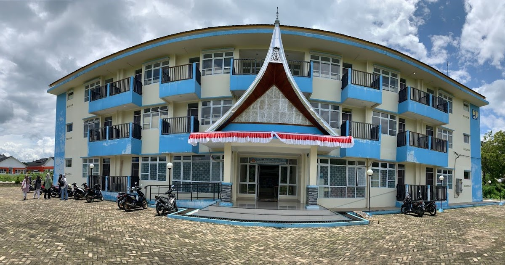

<!doctype html>
<html lang="en">
  <head>
    <meta charset="UTF-8" />
    <meta name="viewport" content="width=device-width, initial-scale=1.0" />
    <title>Peta Psdku Tanah Datar</title>
    <link rel="stylesheet" href="dist/leaflet.css" />
    <script src="dist/leaflet.js"></script>
    <style>
      #map {
        position: absolute;
        top: 0;
        bottom: 0;
        left: 0;
        right: 0;
      }
    </style>
  </head>
  <body>
    <div id="map"></div>
  </body>
  <script>
    var map = L.map("map").setView(
      [-0.5057692775534901, 100.77878783368847],
      17,
    );
    L.tileLayer(
      "https://api.maptiler.com/maps/satellite-v4/256/{z}/{x}/{y}.jpg?key=VMd1gieKnl5V7Z3FAPeW",
      {
        tileSize: 512,
        zoomOffset: -1,
        minZoom: 1,
        attribution:
          '<a href="https://www.maptiler.com/copyright/" target="_blank">&copy; MapTiler</a> <a href="https://www.openstreetmap.org/copyright" target="_blank">&copy; OpenStreetMap contributors</a>',
      },
    ).addTo(map);

    var info_psdku = `<p style = "text-align: center;"></P>
        <p>Politeknik Negeri Padang (PNP) Kampus Tanah Datar merupakan wujud nyata komitmen PNP dalam memperluas akses pendidikan tinggi vokasi berkualitas di Sumatera Barat.
         Berlokasi di Kabupaten Tanah Datar, kampus ini hadir untuk mencetak tenaga kerja profesional, terampil, 
         dan siap pakai yang mampu menjawab tantangan industri di tingkat regional maupun nasional.
         <p><a href ="https://ti.pnp.ac.id/">Baca Selengkapnya</a></p>`;

    var marker = L.marker([-0.5057692775534901, 100.77878783368847])
      .bindPopup(info_psdku)
      .addTo(map);
    var marker1 = L.marker([-0.5049573435577175, 100.77800744455611])
      .bindTooltip("Dzaza furniture")
      .addTo(map);
    var rumah = L.marker([-0.47136553854383295, 100.76220607910898])
      .bindPopup("Titik Awal")
      .addTo(map);
    //garis jalan ke lokasi psdku
    var lokasijalan = [
      [-0.37738999848541943, 100.66838340426438],
      [-0.3768145098281316, 100.66732752622453],
      [-0.37695243686516255, 100.66640482199149],
      [-0.37688109529455516, 100.66607188747443],
    ];
    L.polyline(lokasijalan, { color: "pink" }).addTo(map);

    L.tooltip({ permanent: true })
      .setContent(
        ` <br /> Lokasi Psdku Tanah Datar`,
      )
      .setLatLng([-0.4920185143235637, 100.77408622088036])
      .addTo(map);
  </script>
</html>
